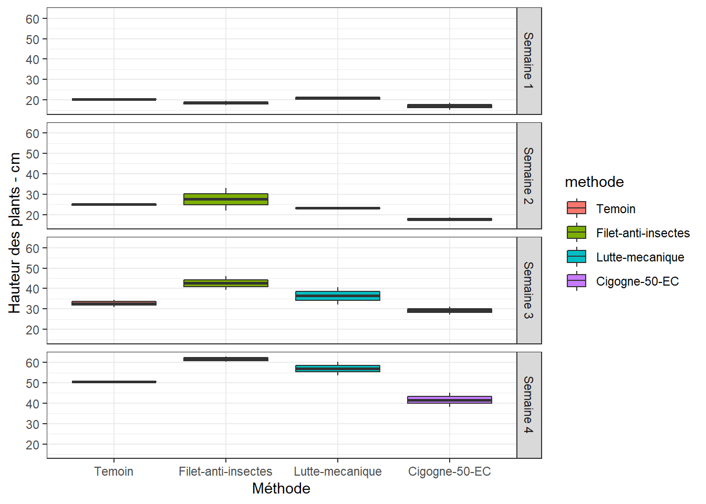
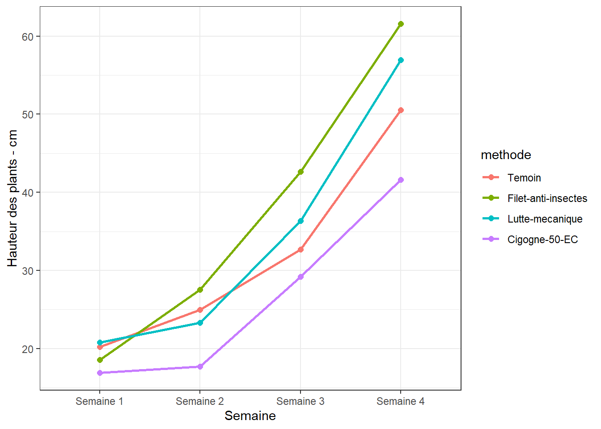

Chapitre 8 Hauteur des plants
Évaluer si la hauteur des plants diffèrent significativement selon la méthode de contrôle appliquée.
Jeu de données kam.csv qui contient différentes mesures dont les Hauteurs des plants (cm) mesurées en 4 séances.
On pourrait également évaluer si les différentes méthodes induisent des hauteurs de plants significativement différentes avec le temps. On comparera les effets des methodes seance par seance, puis à l’aide d’une figure on appréciera s’il y a une évolution en fonction du temps.
** La vriable dépendante ici est quantitative, j’ai donc osé appliquer l’ANOVA à 1 facteur en vérifiant que le pseudo-blocage n’a pas eu d’effet.**
8.1 Les données
df <- read_csv("data/kam.csv")
df <- df %>%
mutate(id = rep(1:8, 4), .before = 1, seance = factor(seance),
methode = factor(methode), bloc = factor(bloc)) %>%
select(id, seance, bloc, methode, haut) %>%
mutate(id = factor(id))Le tableau a été préalablement structuré en format long en Excel. J’ai ajouté un identifiant (id) pour les échantillons des seances.
## Rows: 32
## Columns: 5
## $ id <fct> 1, 2, 3, 4, 5, 6, 7, 8, 1, 2, 3, 4, 5, 6, 7, 8, 1, 2, 3, 4, 5,~
## $ seance <fct> Semaine 1, Semaine 1, Semaine 1, Semaine 1, Semaine 1, Semaine~
## $ bloc <fct> 1, 1, 1, 1, 2, 2, 2, 2, 1, 1, 1, 1, 2, 2, 2, 2, 1, 1, 1, 1, 2,~
## $ methode <fct> Temoin, Filet-anti-insectes, Lutte-mecanique, Cigogne-50-EC, T~
## $ haut <dbl> 20.17, 19.64, 21.59, 18.54, 20.27, 17.51, 20.03, 15.22, 25.57,~8.2 Visualisation boxplots
bxp <- ggplot(df, aes(x = methode, y = haut, fill = methode)) +
geom_boxplot() +
facet_grid(seance ~ .) +
ylab("Hauteur des plants - cm") +
theme_bw()
bxp
Il y a des variations notables d’une méthode à l’autre et éventuellement d’une séance à l’autre.
8.3 Détection des valeurs aberrantes extrêmes
## [1] seance methode id bloc haut is.outlier is.extreme
## <0 rows> (or 0-length row.names)=> Pas d’observation aberrante extrême pour toutes les seances.
8.4 Conditions de l’ANOVA
8.4.1 Normalité
Si les données sont normalement distribuées, la p-value de Shapiro-Wilk doit être supérieure à 0,05 pour chaque méthode.
## # A tibble: 4 x 4
## seance variable statistic p
## <fct> <chr> <dbl> <dbl>
## 1 Semaine 1 haut 0.913 0.376
## 2 Semaine 2 haut 0.930 0.517
## 3 Semaine 3 haut 0.940 0.615
## 4 Semaine 4 haut 0.943 0.645=> Normalité OK.
Créer des QQ-plots pour chaque point par seance
Tous les points se situent approximativement le long de la ligne de référence.
8.4.2 Homogénéité des variances
## Warning in anova.lm(lm(resp ~ group)): ANOVA F-tests on an essentially perfect
## fit are unreliable
## Warning in anova.lm(lm(resp ~ group)): ANOVA F-tests on an essentially perfect
## fit are unreliable
## Warning in anova.lm(lm(resp ~ group)): ANOVA F-tests on an essentially perfect
## fit are unreliable
## Warning in anova.lm(lm(resp ~ group)): ANOVA F-tests on an essentially perfect
## fit are unreliable## # A tibble: 4 x 5
## seance df1 df2 statistic p
## <fct> <int> <int> <dbl> <dbl>
## 1 Semaine 1 3 4 1.60e29 1.30e-58
## 2 Semaine 2 3 4 7.12e30 6.58e-62
## 3 Semaine 3 3 4 2.91e29 3.95e-59
## 4 Semaine 4 3 4 6.50e29 7.89e-60=> Toutes les valeurs p sont < 0.05 => les variances ne sont pas homogènes ! Voyons plus tard avec les résidus …
Les conditions de la validité d’une ANOVA ….
8.5 ANOVA
8.5.1 Séance 1
8.5.1.1 Le modèle
## Anova Table (Type II tests)
##
## Response: haut
## Sum Sq Df F value Pr(>F)
## methode 18.7614 3 2.779 0.1743
## Residuals 9.0014 4La p-value > 0.05 => pas de différence significative entre les effets des méthodes de contrôle sur le Hauteur des plants - cm à la semaine 1.
## # A tibble: 1 x 3
## variable statistic p.value
## <chr> <dbl> <dbl>
## 1 residuals(lm1) 0.974 0.929=> Normalité OK.
## Warning in anova.lm(lm(resp ~ group)): ANOVA F-tests on an essentially perfect
## fit are unreliable## Levene's Test for Homogeneity of Variance (center = median)
## Df F value Pr(>F)
## group 3 2.9338e+31 < 2.2e-16 ***
## 4
## ---
## Signif. codes: 0 '***' 0.001 '**' 0.01 '*' 0.05 '.' 0.1 ' ' 1=> Variances non homogènes
=> Alternative Kruskal-Wallis
## # A tibble: 1 x 6
## .y. n statistic df p method
## * <chr> <int> <dbl> <int> <dbl> <chr>
## 1 haut 8 5.5 3 0.139 Kruskal-Wallis=> Différence non significative entre les effets des méthodes également via la méthode non paramétrique.
8.5.1.2 Comparaisons par paires
=> méthode non paramétrique
df1 %>%
dunn_test(haut ~ methode, p.adjust.method = "bonferroni") %>%
select(group1, group2, p, p.adj, p.adj.signif)# %>% ## # A tibble: 6 x 5
## group1 group2 p p.adj p.adj.signif
## <chr> <chr> <dbl> <dbl> <chr>
## 1 Cigogne-50-EC Filet-anti-insectes 0.683 1 ns
## 2 Cigogne-50-EC Lutte-mecanique 0.0662 0.397 ns
## 3 Cigogne-50-EC Temoin 0.0662 0.397 ns
## 4 Filet-anti-insectes Lutte-mecanique 0.153 0.918 ns
## 5 Filet-anti-insectes Temoin 0.153 0.918 ns
## 6 Lutte-mecanique Temoin 1 1 nsSupposant les conditions de l’ANOVA valide : (Student - Newman - Keuls).
## haut groups methode
## Lutte-mecanique 20.810 a Lutte-mecanique
## Temoin 20.220 a Temoin
## Filet-anti-insectes 18.575 a Filet-anti-insectes
## Cigogne-50-EC 16.880 a Cigogne-50-ECMoyennes et écart-types, avec les lettres (groupes)
(cm1_moy <- summarySE(df1,
measurevar = "haut",
groupvars = "methode") %>%
data.table::setorder(-haut)) %>%
mutate(groups = cm1$groups)## methode N haut sd se ci groups
## 3 Lutte-mecanique 2 20.810 1.10308658 0.780 9.9108397 a
## 4 Temoin 2 20.220 0.07071068 0.050 0.6353102 a
## 2 Filet-anti-insectes 2 18.575 1.50613744 1.065 13.5321080 a
## 1 Cigogne-50-EC 2 16.880 2.34759451 1.660 21.0922999 aFigure pas forcément nécessaire.
8.5.2 Séance 2
8.5.2.1 Le modèle
## # A tibble: 1 x 7
## id seance bloc methode haut is.outlier is.extreme
## <fct> <fct> <fct> <fct> <dbl> <lgl> <lgl>
## 1 2 Semaine 2 1 Filet-anti-insectes 33.1 TRUE FALSE## Anova Table (Type II tests)
##
## Response: haut
## Sum Sq Df F value Pr(>F)
## methode 104.460 3 2.1572 0.2358
## Residuals 64.564 4La p-value est > 0.05 => pas de différence significative entre les effets des méthodes.
## # A tibble: 1 x 3
## variable statistic p.value
## <chr> <dbl> <dbl>
## 1 residuals(lm2) 0.878 0.179## Warning in anova.lm(lm(resp ~ group)): ANOVA F-tests on an essentially perfect
## fit are unreliable## Levene's Test for Homogeneity of Variance (center = median)
## Df F value Pr(>F)
## group 3 1.6073e+33 < 2.2e-16 ***
## 4
## ---
## Signif. codes: 0 '***' 0.001 '**' 0.01 '*' 0.05 '.' 0.1 ' ' 1=> Variances non homogènes
=> Alternative Kruskal-Wallis
## # A tibble: 1 x 6
## .y. n statistic df p method
## * <chr> <int> <dbl> <int> <dbl> <chr>
## 1 haut 8 4.67 3 0.198 Kruskal-Wallis=> Différence non significative entre les effets des méthodes également via la méthode non paramétrique.
8.5.2.2 Comparaisons par paires
=> méthode non paramétrique
df2 %>%
dunn_test(haut ~ methode, p.adjust.method = "bonferroni") %>%
select(group1, group2, p, p.adj, p.adj.signif)# %>% ## # A tibble: 6 x 5
## group1 group2 p p.adj p.adj.signif
## <chr> <chr> <dbl> <dbl> <chr>
## 1 Cigogne-50-EC Filet-anti-insectes 0.102 0.615 ns
## 2 Cigogne-50-EC Lutte-mecanique 0.221 1 ns
## 3 Cigogne-50-EC Temoin 0.0412 0.247 ns
## 4 Filet-anti-insectes Lutte-mecanique 0.683 1 ns
## 5 Filet-anti-insectes Temoin 0.683 1 ns
## 6 Lutte-mecanique Temoin 0.414 1 nsSupposant les conditions de l’ANOVA valide : (Student - Newman - Keuls).
## haut groups methode
## Filet-anti-insectes 27.525 a Filet-anti-insectes
## Temoin 24.960 a Temoin
## Lutte-mecanique 23.300 a Lutte-mecanique
## Cigogne-50-EC 17.675 a Cigogne-50-ECMoyennes et écart-types, avec les lettres (groupes)
(cm2_moy <- summarySE(df2,
measurevar = "haut",
groupvars = "methode") %>%
data.table::setorder(-haut)) %>%
mutate(groups = cm2$groups)## methode N haut sd se ci groups
## 2 Filet-anti-insectes 2 27.525 7.8700985 5.565 70.710029 a
## 4 Temoin 2 24.960 0.8626703 0.610 7.750785 a
## 3 Lutte-mecanique 2 23.300 0.7212489 0.510 6.480164 a
## 1 Cigogne-50-EC 2 17.675 1.1667262 0.825 10.482619 aVisualisation des groupes
8.5.3 Séance 3
8.5.3.1 Le modèle
## Anova Table (Type II tests)
##
## Response: haut
## Sum Sq Df F value Pr(>F)
## methode 198.494 3 3.592 0.1243
## Residuals 73.679 4La p-value > 0.05 => pas de différence significative entre les effets des méthodes sur le Hauteur des plants - cm.
## # A tibble: 1 x 3
## variable statistic p.value
## <chr> <dbl> <dbl>
## 1 residuals(lm3) 0.920 0.432=> Normalité Okay.
## Warning in anova.lm(lm(resp ~ group)): ANOVA F-tests on an essentially perfect
## fit are unreliable## Levene's Test for Homogeneity of Variance (center = median)
## Df F value Pr(>F)
## group 3 1.5023e+31 < 2.2e-16 ***
## 4
## ---
## Signif. codes: 0 '***' 0.001 '**' 0.01 '*' 0.05 '.' 0.1 ' ' 1=> Variances non homogènes
=> Alternative Kruskal-Wallis
## # A tibble: 1 x 6
## .y. n statistic df p method
## * <chr> <int> <dbl> <int> <dbl> <chr>
## 1 haut 8 4.83 3 0.184 Kruskal-Wallis=> Différence non significative entre les effets des méthodes également via la méthode non paramétrique.
8.5.3.2 Comparaisons par paires
=> méthode non paramétrique
df3 %>%
dunn_test(haut ~ methode, p.adjust.method = "bonferroni") %>%
select(group1, group2, p, p.adj, p.adj.signif)# %>% ## # A tibble: 6 x 5
## group1 group2 p p.adj p.adj.signif
## <chr> <chr> <dbl> <dbl> <chr>
## 1 Cigogne-50-EC Filet-anti-insectes 0.0412 0.247 ns
## 2 Cigogne-50-EC Lutte-mecanique 0.153 0.918 ns
## 3 Cigogne-50-EC Temoin 0.540 1 ns
## 4 Filet-anti-insectes Lutte-mecanique 0.540 1 ns
## 5 Filet-anti-insectes Temoin 0.153 0.918 ns
## 6 Lutte-mecanique Temoin 0.414 1 nsSupposant les conditions de l’ANOVA valide : (Student - Newman - Keuls).
## haut groups methode
## Filet-anti-insectes 42.650 a Filet-anti-insectes
## Lutte-mecanique 36.375 a Lutte-mecanique
## Temoin 32.665 a Temoin
## Cigogne-50-EC 29.205 a Cigogne-50-ECMoyennes et écart-types, avec les lettres (groupes)
(cm3_moy <- summarySE(df3,
measurevar = "haut",
groupvars = "methode") %>%
data.table::setorder(-haut)) %>%
mutate(groups = cm3$groups)## methode N haut sd se ci groups
## 2 Filet-anti-insectes 2 42.650 4.723473 3.340 42.43872 a
## 3 Lutte-mecanique 2 36.375 6.130616 4.335 55.08140 a
## 4 Temoin 2 32.665 2.524371 1.785 22.68058 a
## 1 Cigogne-50-EC 2 29.205 2.722361 1.925 24.45944 aVisualisation des groupes
8.5.4 Séance 4
8.5.4.1 Le modèle
## Anova Table (Type II tests)
##
## Response: haut
## Sum Sq Df F value Pr(>F)
## methode 447.25 3 12.165 0.01768 *
## Residuals 49.02 4
## ---
## Signif. codes: 0 '***' 0.001 '**' 0.01 '*' 0.05 '.' 0.1 ' ' 1La p-value < 0.05 => différence significative entre les effets de certaines méthodes de lutte sur le Hauteur des plants - cm, la séance 4.
## # A tibble: 1 x 3
## variable statistic p.value
## <chr> <dbl> <dbl>
## 1 residuals(lm4) 0.931 0.525=> Normalité Okay.
## Warning in anova.lm(lm(resp ~ group)): ANOVA F-tests on an essentially perfect
## fit are unreliable## Levene's Test for Homogeneity of Variance (center = median)
## Df F value Pr(>F)
## group 3 3.3162e+31 < 2.2e-16 ***
## 4
## ---
## Signif. codes: 0 '***' 0.001 '**' 0.01 '*' 0.05 '.' 0.1 ' ' 1=> Variances non homogènes
=> Alternative Kruskal-Wallis
## # A tibble: 1 x 6
## .y. n statistic df p method
## * <chr> <int> <dbl> <int> <dbl> <chr>
## 1 haut 8 6.67 3 0.0833 Kruskal-Wallis=> Différence non significative entre les effets des méthodes selon la méthode non paramétrique.
8.5.4.2 Comparaisons par paires
=> méthode non paramétrique
df4 %>%
dunn_test(haut ~ methode, p.adjust.method = "bonferroni") %>%
select(group1, group2, p, p.adj, p.adj.signif)# %>% ## # A tibble: 6 x 5
## group1 group2 p p.adj p.adj.signif
## <chr> <chr> <dbl> <dbl> <chr>
## 1 Cigogne-50-EC Filet-anti-insectes 0.0143 0.0858 ns
## 2 Cigogne-50-EC Lutte-mecanique 0.102 0.615 ns
## 3 Cigogne-50-EC Temoin 0.414 1 ns
## 4 Filet-anti-insectes Lutte-mecanique 0.414 1 ns
## 5 Filet-anti-insectes Temoin 0.102 0.615 ns
## 6 Lutte-mecanique Temoin 0.414 1 nsSupposant les conditions de l’ANOVA valide : (Student - Newman - Keuls).
## haut groups methode
## Filet-anti-insectes 61.570 a Filet-anti-insectes
## Lutte-mecanique 56.935 a Lutte-mecanique
## Temoin 50.560 ab Temoin
## Cigogne-50-EC 41.635 b Cigogne-50-ECMoyennes et écart-types, avec les lettres (groupes)
(cm4_moy <- summarySE(df4,
measurevar = "haut",
groupvars = "methode") %>%
data.table::setorder(-haut)) %>%
mutate(groups = cm4$groups)## methode N haut sd se ci groups
## 2 Filet-anti-insectes 2 61.570 1.9091883 1.350 17.153376 a
## 3 Lutte-mecanique 2 56.935 4.5891230 3.245 41.231634 a
## 4 Temoin 2 50.560 0.1555635 0.110 1.397683 ab
## 1 Cigogne-50-EC 2 41.635 4.9285343 3.485 44.281124 bVisualisation des groupes avec ce dernier cas.
8.6 Évolution des Hauteurs de plants selon la méthode au cours du temps
8.6.1 Sommaire
## seance methode N haut sd se ci
## 1 Semaine 1 Cigogne-50-EC 2 16.880 2.34759451 1.660 21.0922999
## 2 Semaine 1 Filet-anti-insectes 2 18.575 1.50613744 1.065 13.5321080
## 3 Semaine 1 Lutte-mecanique 2 20.810 1.10308658 0.780 9.9108397
## 4 Semaine 1 Temoin 2 20.220 0.07071068 0.050 0.6353102
## 5 Semaine 2 Cigogne-50-EC 2 17.675 1.16672619 0.825 10.4826189
## 6 Semaine 2 Filet-anti-insectes 2 27.525 7.87009847 5.565 70.7100294
## 7 Semaine 2 Lutte-mecanique 2 23.300 0.72124892 0.510 6.4801644
## 8 Semaine 2 Temoin 2 24.960 0.86267027 0.610 7.7507849
## 9 Semaine 3 Cigogne-50-EC 2 29.205 2.72236111 1.925 24.4594441
## 10 Semaine 3 Filet-anti-insectes 2 42.650 4.72347330 3.340 42.4387238
## 11 Semaine 3 Lutte-mecanique 2 36.375 6.13061579 4.335 55.0813975
## 12 Semaine 3 Temoin 2 32.665 2.52437121 1.785 22.6805755
## 13 Semaine 4 Cigogne-50-EC 2 41.635 4.92853426 3.485 44.2811235
## 14 Semaine 4 Filet-anti-insectes 2 61.570 1.90918831 1.350 17.1533764
## 15 Semaine 4 Lutte-mecanique 2 56.935 4.58912301 3.245 41.2316344
## 16 Semaine 4 Temoin 2 50.560 0.15556349 0.110 1.39768258.6.2 Visualisation
ggplot(df_ic, aes(x = seance, y = haut, colour = methode, group = methode)) +
geom_line(size = 1) +
geom_point(size = 2) +
ylab("Hauteur des plants - cm") +
theme_bw()
Tendance à la hausse au cours du temps.
Nous savons par les analyses pour chaque seance plus haut, que
- seance 1 : pas de différences signicatives
- seance 2 : pas de différences signicatives
- seance 3 : pas de différences signicatives
- seance 4 : différences signicatives entre les méthodes en supposant les conditions de l’ANOVA valides.
Puisque les données ne répondent pas aux conditions pour évaluer les effets des méthodes au cours du temps, on négligera l’effet des méthodes pour évaluer globalement l’effet du temps.
On pourrait se demander si les hauteurs des plants sur l’ensemble des méthodes, sont significativement différentes d’une seance à l’autre (c’est-à-dire avec le temps).
8.6.3 Effet du temps
8.6.3.1 boxplots, facteur temps
8.6.3.2 Valeurs aberrantes, facteur temps
df <- df %>% mutate(id2 = 1:nrow(.), .before = 1)
df_out <- df %>%
group_by(seance) %>%
identify_outliers(haut) %>%
select(id2, seance, bloc, methode, is.outlier, is.extreme)
df_out## # A tibble: 2 x 6
## id2 seance bloc methode is.outlier is.extreme
## <int> <fct> <fct> <fct> <lgl> <lgl>
## 1 8 Semaine 1 2 Cigogne-50-EC TRUE FALSE
## 2 10 Semaine 2 1 Filet-anti-insectes TRUE FALSE8.6.3.3 Homogénéité des variances et ANOVA, facteur temps
ANOVA avec correction des condition get_anova_table().
## ANOVA Table (type III tests)
##
## Effect DFn DFd F p p<.05 ges
## 1 seance 3 21 115.251 3.34e-13 * 0.849=> C’est la p-value qui nous intéresse et elle est < 0.01 => différence très significative sur les hauteurs des plants entre certaines séances.
8.6.3.4 Comparaisons par paires, facteur temps
tph <- df %>%
pairwise_t_test(haut ~ seance,
paired = TRUE,
p.adjust.method = "bonferroni")
tph %>%
select(group1, group2, p, p.adj, p.adj.signif)## # A tibble: 6 x 5
## group1 group2 p p.adj p.adj.signif
## <chr> <chr> <dbl> <dbl> <chr>
## 1 Semaine 1 Semaine 2 0.022 0.133 ns
## 2 Semaine 1 Semaine 3 0.0000885 0.000531 ***
## 3 Semaine 1 Semaine 4 0.00000494 0.0000296 ****
## 4 Semaine 2 Semaine 3 0.0000676 0.000406 ***
## 5 Semaine 2 Semaine 4 0.00000224 0.0000134 ****
## 6 Semaine 3 Semaine 4 0.0000419 0.000251 ***=> Presque toutes les paires sont significativement différentes.
8.6.3.5 Boxplots avec p-values
tph <- tph %>% add_xy_position(x = "seance")
ggboxplot(df, x = "seance", y = "haut") +
stat_pvalue_manual(tph) +
labs(subtitle = get_test_label(lm, detailed = TRUE),
caption = get_pwc_label(tph))=> Évidemmenet croissance avec le temps.